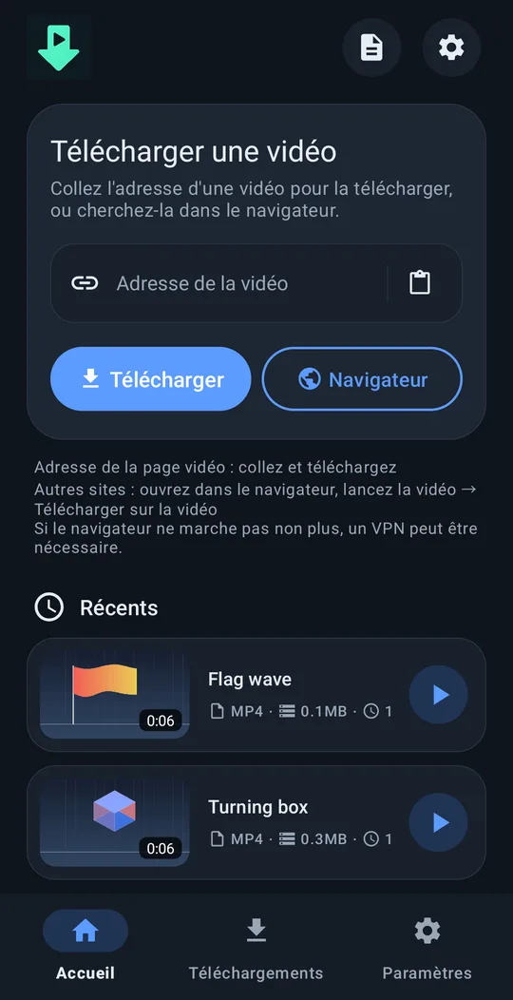
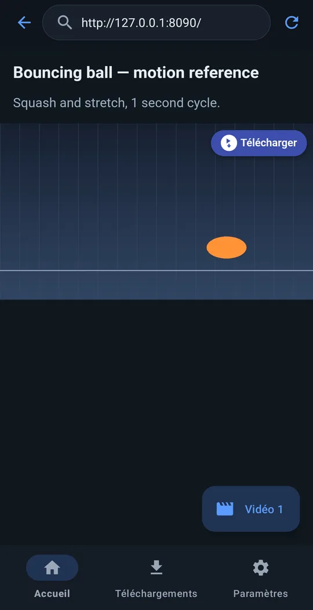
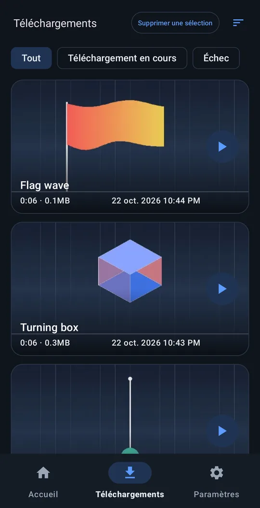
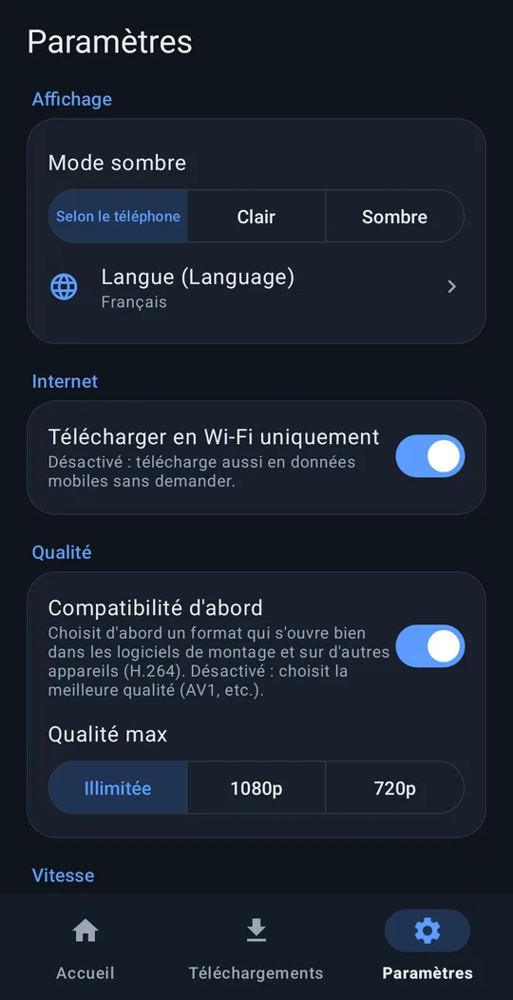

N’importe quelle vidéo, sur votre téléphone.
Collez un lien et téléchargez — ou ouvrez la page dans le navigateur intégré, lancez la vidéo et touchez ⬇ Télécharger au‑dessus.
Android 8.0+ · ARM 64 bits · gratuit · sans compte
Comment ça marche




Fonctions
Collez un lien
Fonctionne avec la plupart des sites vidéo populaires.
Bouton « Télécharger » sur les vidéos
Dans le navigateur intégré, un bouton « Télécharger » apparaît sur la vidéo lue par la page — fonctionne sur beaucoup de sites où le lien ne suffit pas.
Prêt pour le montage
Enregistré dans Movies/VideoRef. « Compatibilité d'abord » choisit H.264 + AAC pour que les applis de montage l’ouvrent directement.
Continue en arrière‑plan
Continue de télécharger écran éteint. « Télécharger en Wi-Fi uniquement », résolution maximale.
10 langues
English, 한국어, 简体中文, 繁體中文, 日本語, Español, Deutsch, Français, Português (Brasil), Русский. Thème clair / sombre.
Rien ne nous est envoyé
Pas de suivi, pas de compte.
Installation
- Téléchargez l’APK avec le bouton ci‑dessus (ou dans Releases sur GitHub).
- Ouvrez l’APK sur votre téléphone.
- Si on vous le demande, autorisez votre navigateur ou votre appli de fichiers à installer des applis inconnues, puis touchez Installer.
Une édition Google Play arrive bientôt. En raison des règles de Play, elle prend en charge moins de sites et ne met à jour son moteur de téléchargement qu’avec les mises à jour de l’appli. Les deux éditions peuvent être installées côte à côte.
Soutenir just downloader
just downloader est gratuit. S’il vous a fait gagner du temps, un petit soutien aide la prochaine mise à jour.
Questions fréquentes
C’est vraiment gratuit ?
Oui. Libre et open source (GPL‑3.0). Pas d’inscription, pas de période d’essai.
Envoie‑t‑il mes données ?
Aucune donnée personnelle. Rien n’est envoyé au développeur, sauf si vous envoyez vous‑même un rapport d’erreur. Politique de confidentialité
Quels sites fonctionnent ?
Pour la plupart des sites vidéo populaires, le lien suffit. Sinon, ouvrez la page dans le navigateur intégré, lancez la vidéo et touchez « Télécharger » dessus. Les vidéos protégées par DRM (services de streaming payants) ne peuvent pas être enregistrées.
Un problème ?
Paramètres → Aide → Signaler un problème prépare un e‑mail à support@4dir.net avec le journal de l’appli en pièce jointe. Avec un compte GitHub, vous pouvez aussi ouvrir un ticket : GitHub.